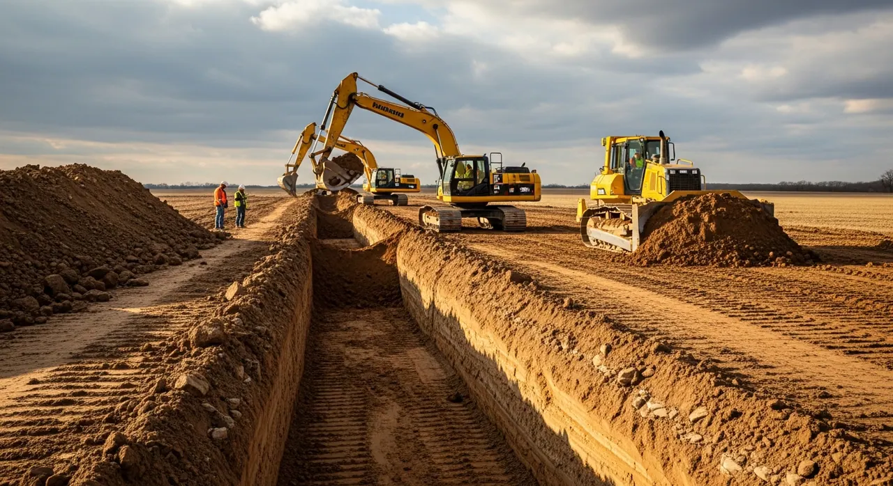
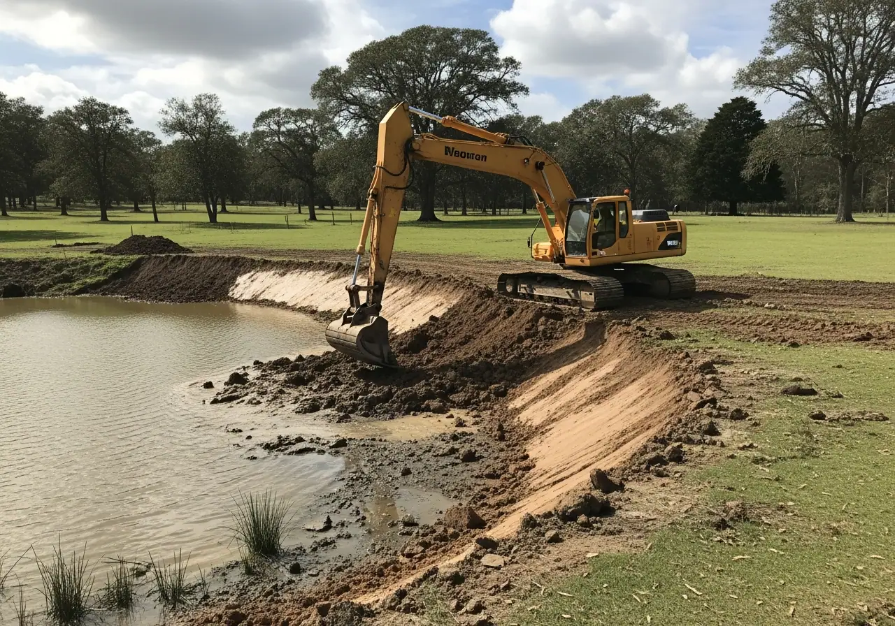

Useful guidance for working properties.
Questions about drainage, clearing, ponds, grass and land preparation, connected to relevant services.
Properties of an acre or moreUpstate South Carolina + Greater CharlotteLand · Water · Ongoing care
Recognise a drainage problem.

5 signs your property has a drainage problem
Understand what to observe before a conversation about the work.
Read the article concept →More property questions.

Land clearing & forestry mulching
Open acreage and access with clearing suited to the land.
Explore scope →
Ponds & waterways
Look after banks, vegetation and visible water movement.
Explore scope →
Turf installation & seeding
Coordinate soil, grade and establishment for large sites.
Explore scope →